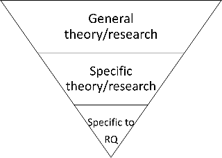
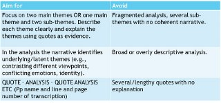
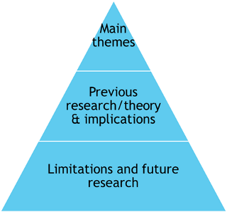

9 Qualitative report
In this section, you will find information and guidance about your qualitative report and a report writing guide. Please make sure to familiarise yourself with the AIS and FIS on Moodle before starting to work on the report.HERE is a suggested timeline for the qualitative report and portfolio
9.1 What is the qualitative report?
You will be asked to write an individual qualitative report on one of five secondary data topics. You should conduct Thematic Analysis on your chosen dataset.Watch this video for an overview about the report, and make sure you have accessed the AIS and FIS on Moodle before you start working on the report.
9.2 Report datasets and how to use UK data service
Before accessing your datasets, watch THIS VIDEO on how to use UK data service. It shows you an example of how to download the data with one of the datasets. Please note that some of the datasets are on sensitive topics, and contain information that may be upsetting; make sure to familiarise yourself with the interview schedules and have a quick scan of the data before you decide which dataset to work with.
You can access the UK data service HERE
You can choose one of the three available datasets:
9.3 Developing a research question
As part of writing up your qualitative report, we ask that you develop a research question to help you guide your enquiry. Here is some guidance on how to get started:
9.3.1 Getting started with the data
For this report, you are using secondary data. This means that the data have already been collected using specific interview questions - before you start thinking about your research question, make sure to have a look at the interview schedule for your chosen dataset (this document will list the interview questions the researchers asked the participants). This should guide you in what questions you might ask and what kind of question you might be able to answer with the available data. You can also take a look at some of the transcripts to get a better feel for the data.
Looking at the data before you decide on your RQ might feel a bit strange after RM1, but remember that you are not doing hypothesis-testing with qualitative designs - it is quite normal for a qualitative research question to change during the research process, and this is completely fine as you are not statistically testing for a specific effect.
Be mindful that you are not making a research question that is actually one of the interview questions - your RQ should be broader than what the specific interview questions are.
One of the most common mistakes that students make when framing their research question in RM2 is that it is a little too ‘quant’ in nature. This makes perfect sense, as most of your research methods education so far in the programme has been focused on quant! However, for your qual report, your RQ should be a little different to the RQs you are used to.
Look at the following examples:
- How does poor sleep impact on wellbeing?
- What is the difference in wellbeing between those who belong to university and those who don’t?
Both questions are a bit too quantitative in nature (i.e. 1 is causal and 2 is about a difference between groups). They would also benefit from thinking about what is being looked at, specifically (e.g. views, opinions, experiences).
We’d perhaps rephrase these as follows:
- What are students’ perceptions of the relationship between sleep and wellbeing?
- What are online conversion students’ experiences of belonging to University? How do these experiences relate to perceived wellbeing?
These questions are now a bit more in line with qualitative and are specific about what they are asking in each (and also what the group of interest is). The second one covers a bit more than the first, which is why it is split into two (a main RQ and a subsidiary one)
9.3.2 Some tips for developing a research question
- Communication: Keep your research question simple and specific. If you have a very broad question, it can be helpful to break the question down into smaller sub-questions.
-
Type of question: We want the RQ to tap in to more than ‘descriptive’ experience but also offer scope to explore the ‘how’ and ‘why’ of psychological experience–Is the question asking about experiences, understanding, accounts of practice, or influencing factors?
- Practical constraints: Can the question realistically be explored using thematic analysis and using secondary data? Try not to cover too much
- Guiding: Remember that your RQ guides your enquiry but shouldn’t be restrictive - it’s not the case that you are unable to report themes that don’t directly answer your RQ.
- Flexibility: Research questions are more flexible than hypotheses-it is acceptable for the focus of the RQ to be refined during/after data collection.
9.3.3 Formative feedback on your RQ
If you would like to receive formative feedback on your RQ, you can submit it on this Padlet by the end of week 5, semester 2. Please note that RQs submitted later than that will not receive feedback.
If you would like to discuss your RQ, you can also attend Ashley’s and Wil’s office hours.
9.4 Qualitative report guide
9.4.1 Using this report guide
This guide is intended to help you in the write up of your qualitative project report. When writing your report, remember to use the other resources available to you:
- Your feedback for your RM1 report
- Braun & Clarke (2013) have an excellent chapter on writing up qualitative research
- Braun & Clark (2022) book
- All the resources available in this book (particularly sections for 4. Data analysis and 7. Academic writing)
- Published articles which use a Thematic Analysis
- A helpful resource for APA formatting is OWL Purdue
Use the assessment criteria on Moodle as a checklist before you submit the report, to ensure you have addressed all points. If you have questions post on Teams and/or visit our office hours. All the best in writing your report.
9.4.2 General writing style
Your writing should be clear, concise and easy to follow - remember that academic writing does not need to be complicated to be good. Maintain a neutral, academic tone throughout. Discuss one idea/argument per paragraph.
You should format your in-text citations and references in APA 7th style.
APA writing style encourages the use of active voice (“I coded the data” rather than “the data were coded”) but if you feel more comfortable writing in passive voice, feel free to do so - just make sure to be consistent throughout and be careful not to make your writing overly complex.
You can use first person singular (I) or plural (we) but in the reflexivity section make sure to write in first person singular, as this is your reflection of your own positionality to the RQ and the data, and it’s often very personal.
9.4.3 Report sections
You should include all the sections listed here:
- Title
- Abstract
- Introduction
- Method
- Analysis
- Discussion
- References
9.4.3.1 Title
The title should reflect the research question(s) and define your sample (e.g., UG students experience of…). Be specific should include:
- Who
- What
- How
Examples:
- A Thematic Analysis (how) of the panic attack experiences (what) of primary aged children in inner city Schools in the UK (who)
- Barriers and enablers to modifying sleep behaviour (what) in adolescents and young adults (who): A qualitative investigation (how)
9.4.3.2 Abstract (suggested word count: 100-150 words)
In an academic journal, the function of an abstract is to allow the reader to decide whether or not to read the full article. Aim to summarise all sections of the report in 150 words, including; 1) area of research 2) aim of the study 3) brief methodology, 4) approach to analysis , 5) main findings, and 6) main ‘take-away’/ headline findings and implications. Outline your main themes as findings instead of statistics - as would be typical in a quantitative report. Keep in mind that you are summarising your research for a non-expert and you want to “entice” them to read more.
9.4.3.3 Introduction (suggested word count 750-850 words)
The aim of the introduction is to provide the reader with the necessary background to interpret your rationale for further research - this is true whether you are using qualitative or quantitative led enquiry. You are expected to provide a detailed, critical literature review of relevant, published research (quantitative and/or qualitative) for this topic/area. Identify the key issues and debates, and use these to develop an argument for your study. As with any introduction to an APA research report, you should develop the introduction using the’ funnel approach’. You start with a broad overview of the topic and get more and more specific, until you arrive at the rationale for ‘your’ research and of course the research question(s).
Remember you have a limited number of words to say all of this, so your literature review should focus on relevant and recent articles in the area that have influenced your choice of research question. Do try to locate the most recent examples of qualitative research in this well defined topic area - take the reader to the last example of relevant research and say how you plan to ‘build’ on this research - helping to create a great rationale! Remember to reference all sources of information in the text (for example, government reports, websites, media reports).
A resource for helping you to develop evaluation in your introductions can be found HERE
You should end with a statement of what the aim of your study was, and the research question.
Next, remember to outline any limitations of previous studies - critique (however, make sure the limitations you discuss are actually something your study can address - otherwise your rationale will not be very strong)! Instead of just describing previous studies, try to evaluate them. What do the findings mean? Are there any contrasting findings? If so, why? This should lead clearly to a justification of your own study; how will your study address these issues? This should not be done independently of your literature review. When you are outlining the research and theory you should be developing a clear rationale for your research question.
Finally, explain your study and clearly outline your research question/s.
In sum:
- Review and evaluate previous theories and research relevant to the topic.
- Provide a clear justification and explanation of your study, linked to your research questions
- The main and subsidiary research questions have been outlined clearly and offer good alignment with qualitative methods (in this case a thematic approach).
Remember that the point of this section is exactly the same as a quantitative report: you are demonstrating what work has been done in the past, to build up an argument as to why the current study has been conducted.
9.4.3.4 Method (suggested word count 350-450 words)
The aim of the method section is to clearly report how your study was conducted – the reader should be able to re-run your research from the details provided. In this case, contextualise the original study your secondary data are from, report details of the original data collection, explain your process of refining and selecting the data used for your project, and describe the qualitative analysis you used. True ‘replication’ is difficult due to central role of researcher in influencing some aspects of the research such as analysis. This is not an experiment.
Follow these subheadings for your method section for this report:
Secondary data
In this section you should describe the original study and give the reader context about their data collection. Understanding the specific context of each study is a key element of qualitative research, which is why it is really important for you to explain that in order for your secondary analysis to be reported openly.
What was the original study about? Who conducted it? Where are the data available? You should cite your chosen dataset in APA style (do not provide a link in text) - each dataset has this information on the UK data service page under the Citation and copyright section. How many interviews did they conduct, what was the methodology they used for the interviews (you should find this information on the UK Data Service page for your chosen data set)? Who were their participants? What were the participants asked about?
If you have demographic information about the participants on the UK Data Service Website, you may wish to include this, but don’t worry if your chosen dataset doesn’t provide this - we don’t expect you to report any information that was not available to you.
Data selection
In this section you should describe your procedure for choosing your final data set. How many interviews did you choose? How did you choose the specific ones you decided to use for your analysis?
Ethics
The information you are able to provide in this section will depend on the information made available within the dataset. Some things you might want to comment on include: anonymisation procedures (e.g. has information been replaced or redacted), rapport building, information/consent/debrief, consent as a process. You will only be able to include information that has been made available in the dataset, so do not worry if you do not know a lot of detail.
Reflexivity
In qualitative research it is important to acknowledge the role of the researcher in interpretation of the data (Elliot & Fischer & Rennie, 1999). This is where you question your own motives and attitudes in doing this project. Obviously we told you that you had to do it. But what assumptions did you hold prior to beginning the research? Had you considered issues around the topic previously? Did they match what the interviews say? Or did you disagree with them? Did this affect which interviews you chose to include in your analysis? And if so, how did this impact on your analysis? Because different people would interpret the data differently, it is useful for you to expose your own attitudes at this point so that others can see how you have impacted on the analysis. See Braun & Clarke (2013, pp36-37, 303-304) and activities around reflexivity. Reflexive analysis should be concise for this project, perhaps around 3-4 sentences.
Data Analysis
In this section, report the following:
- Details on the analysis you are using
- Briefly outline the your theoretical approach (look back at the second part of the lecture in Semester 1 Week 8 for help with this if needed)
- Outline the different stages of the analysis. Qualitative analysis is accused of being fluffy/opaque sometimes. BE SPECIFIC about the stages of analysis. It’s good practice at this stage to refer directly to a methodologists guidelines (e.g. Smith IPA, B and C for TA etc). Literally outline it as STAGE1: STAGE 2: etc. For the project, 2-3 sentences outlining the stages (please note, this is in total, NOT per stage!) is sufficient. A high quality account of the approach to analysis should offer transparency - try to ‘open up the box’ to be clear about what goes on between noting codes and arriving at themes. Remember that the researcher observes themes in the data - they do not emerge
9.4.3.5 Analysis (suggested word count: 750-900 words)
Your analysis section is the part of the project where you show the evidence you have collected. It is similar therefore to a Results Section in a quantitative report. It is useful to use sub-headings here. Each sub-heading will state the name of each theme/sub-theme. You may wish to number these sub-headings.
The aim is to make your analysis as transparent as possible, so that anyone can see how you have arrived at your interpretations from your transcript. Quotes and the narrative you develop in this section should be supported using sections taken from the transcript. Start by giving an overview of the main themes in a paragraph (NO QUOTES AT THIS TIME), then present your first themes, inserting supporting quotes at appropriate points.
Longer quotes should be indented to the centre, separated from the main text by a line before and after,and should include name or number of the participant. Shorter quotes can be embedded in the text (see example below). Guidelines for presenting quotes from participants in APA format can be found HERE.
PLEASE NOTE: most qualitative analyses require you to provide some analytical commentary after each quote. This addresses the assessment criteria about themes being evidenced by quotes AND described and interpreted within a narrative. See the Semester 2 Week 6 materials on developing a narrative and the Braun & Clarke (2013) text (chapter 11) for examples for analytical commentary.
See an example of how to format quotes in APA style HERE
Due to the word limit we recommend that you:
- Choose a maximum of 2 themes to include in the Analysis Section. You may have found more in the analyses, but the scope and word limit of the project allows you to develop a narrative and evidence for 2 main themes with no subthemes. One alternative would be to report one theme with 2-3 subthemes. You may identify more themes than this, which is fine, but please stick to the guidelines here.
- Introduce and explain each theme briefly using sub headings
- Include 3-5 quotes support each theme (include the Pseudonym/participant number)
- If you want to use a quote that is too long – or includes unnecessary detail – you can remove part of the text and replace it with ellipses. However, remember that you should NEVER alter any of the words/phrasing used, even if you think you know what the participant was going to say. This would be the same (and as unacceptable) as editing numbers in a quantitative analysis!

Please note that, although it says page and line number in the above table, we realise you might not have this information. It is therefore fine just to present the name of the participant for each quote, and you do not need to include page/line numbers too
9.4.3.6 Discussion (suggested word count: 750-850 words)
Some activities to support you with developing evaluation in your Discussion section can be found HERE.
The aim of the discussion is to summarise and explain your overall findings and consider how they help inform the research questions. It will be necessary to consider the findings in relation to previous research and theories (that are referenced in the Introduction). You should also discuss any practical implications of your findings, methodological limitations, and suggestions for further research.
Start by briefly summarising your RQs and the themes that you have observed. How do your findings add to, or fit with previous research? You can either take each main theme as a big discussion or break it down to sub-theme theme level. Be critical. Bring in the literature you discussed in the introduction, and new literature if need be. Do your findings agree/disagree with previous studies? Do your findings challenge existing research in any way? Did your methodology uncover something that the other studies couldn’t get at? - basically… what is your contribution?
Implications: In addition to theoretical implications you would normally discuss in a quantitative report in psychology, there is also scope for discussion of the implications. Remember to only discuss implications that you can realistically relate to your own findings, and to support your arguments with evidence. Try to over some specifics and not vague/general implications.
Limitations: You only used a maximum of three interviews (as we did not want to overload you). However, avoid evaluating your study purely on quantitative standards such as validity and reliability and sample size. We strongly suggest that you do not use lack of generalisation as a limitation. This can be contradictory to the philosophy of the method of analysis. Evaluate the strengths and weaknesses on qualitative grounds, e.g., were interviews the best way of eliciting the information for this particular topic? For guidance on evaluating qualitative research against a set of guidelines see Yardley (2000) & Braun & Clarke (2013, Ch 12).
Suggestions for future research How would you improve on your study? If you had the chance what kind of research questions would you like to ask? Make sure these are also evidence-based and make sense following from your study. Limitations and future directions don’t necessarily need to be separate sections; often, a future suggestion flows logically from a limitation.
Think of your research project as an apprenticeship. We are not looking for you to do the perfect research project at your first attempt so don’t be shy about pointing out the things you could have done better. But be constructive. It’s not so much about telling us what you did wrong, as telling us what you have learned and how you would improve this study if you got another chance.
Conclusion: End your report with a brief paragraph summarising your key conclusions from the study.

9.4.3.7 Recap of word count for each section of the report
- ABSTRACT: 100-150 words
- INTRODUCTION: 700-800 words
- METHOD: 350-450 words
- ANALYSIS: 750-900 words
- DISCUSSION: 750-850 words
9.4.3.8 References
References both in the main body of text and in the reference list are structured in exactly the same way as in a quantitative report using APA 7th style.
9.4.3.9 Appendices
An appendix (plural: appendices) is a supplementary document which forms part of a main document but is not essential for its completeness, containing supporting information, and usually appearing at the end.
The appendix can often hold a lot of information. In the qualitative report we ask you to include the following in the appendices of the report:
- A list of the interviews you have chosen and a link to the original dataset (you should not include the transcripts themselves)
- A sample of initial coding of the transcript
- You might also have a list of the interview questions (if easily obtained from your transcripts or study documentation on UK data service)
9.4.3.10 Further reading
The RM2 reading list has examples of how qualitative research is presented and written up. The APA Reporting Standards for Qualitative Research provide comprehensive guidance on how to write up a qualitative article. These guidelines are very detailed and go beyond the scope of what you need to report in the qualitative report, but do provide insight into how to report methods and analysis (in particular) in a transparent way. If in doubt consult the guidance on this book chapter, the assessment information sheet for the course and ask on the Teams channel.